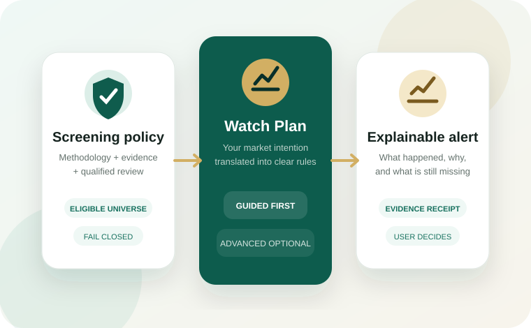
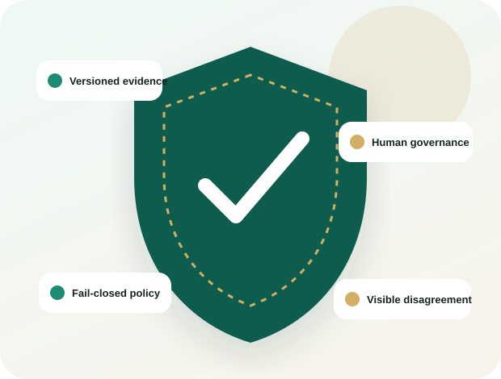

01
Discover
Browse the Sharia-Screened Market
Start with assets allowed by the selected policy. Open a card to see status, methodology, review date, opportunity type, readiness, and what is missing.
The product is designed for beginner-to-mid Muslim investors: screening first, understandable choices second, technical depth only when requested.

Start with assets allowed by the selected policy. Open a card to see status, methodology, review date, opportunity type, readiness, and what is missing.
Read a simple summary, methodology outcomes, evidence sources, qualifications, reviewer information, and status history before deciding to follow the asset.
Pick a breakout, pullback, unusual activity, or price level—or describe your own idea. HilalMarkets clarifies the intention and shows the exact screened universe.
See which eligible assets currently match, which are forming, what requirements are missing, and which assets were excluded by policy or data availability.
Receive understandable updates, inspect the opportunity journey, and use the built-in investigation when an expected alert does not happen.
The assistant can clarify language and compile validated mechanics. Market calculations, rule outcomes, opportunity states, and alert authority remain inside deterministic application services after explicit user approval.

| What the user says | What the user sees | What the system stores |
|---|---|---|
| “Tell me when a screened coin is close to breaking a recent high.” | Breaking a recent high · Early + confirmed | Versioned range, distance, close, and notification mechanics |
| “Only coins that fit my Sharia policy.” | HM-01 · Eligible only · 54 current assets | Methodology, version, statuses, universe snapshot, policy decision |
| “Pause it if the project changes.” | Pause affected asset and notify me | Compliance-change behavior, event, impact, and delivery audit |
It can help you find and follow Sharia-screened opportunities, but it does not replace qualified religious, financial, legal, or investment advice.